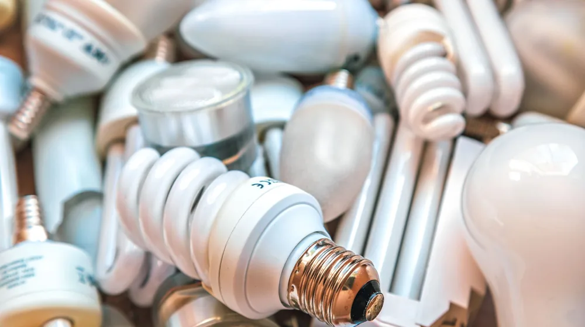

에너지바우처, 장점만 보고 신청? 놓치기 쉬운 단점과 활용 팁
사진: Sergei Starostin / Pexels (무료 이미지, 출처 표기)
에너지바우처, 어떤 제도인가요?

매년 겨울, 난방비 걱정을 덜어주는 고마운 제도, 에너지바우처. 그런데 무턱대고 신청하기 전에 장점만 보고 쉽게 결정하셨나요? 사실 에너지바우처는 실질적인 도움을 주지만, 동시에 놓치기 쉬운 몇 가지 제약 사항도 존재합니다. 2026년 10월 기준으로 에너지바우처의 주요 지원 대상부터 실질적인 장점과 신청 전에 반드시 알아야 할 단점, 그리고 현명하게 활용하는 팁까지 한눈에 비교하고 싶다면 이 글을 끝까지 확인해 보세요.
에너지바우처는 취약계층이 시원한 여름과 따뜻한 겨울을 보낼 수 있도록 전기, 도시가스, 지역난방, 등유, LPG, 연탄 등을 구입할 수 있도록 지원하는 제도입니다. 산업통상자원부에서 주관하며, 에너지 비용 부담을 줄여주는 것이 핵심 목적입니다.
2026년 에너지바우처 주요 지원 대상과 금액
에너지바우처는 소득 기준과 가구원 특성을 모두 충족해야 신청할 수 있습니다. 2026년 10월 기준, 소득 기준은 국민기초생활보장법에 따른 생계급여, 의료급여, 주거급여, 교육급여 수급자입니다. 여기에 가구원 중 노인, 영유아, 장애인, 임산부, 중증질환자, 한부모가족, 소년소녀가정 중 어느 하나에 해당해야 합니다.
지원 금액은 가구원 수에 따라 차등 지급됩니다. 아래 표는 2026년 기준으로 가구원 수에 따른 지원 금액(연간)의 예시를 보여줍니다. 정확한 지원 금액은 매년 정부 정책에 따라 변동될 수 있으므로, 신청 전 반드시 공식 홈페이지나 주민센터를 통해 확인하시길 권장합니다.
에너지바우처 장점: 우리 집에 실질적인 도움은?
에너지바우처의 가장 큰 장점은 바로 '직접적인 경제적 부담 경감'입니다. 고지서에 명시된 에너지 비용이 줄어드는 것을 눈으로 확인할 수 있어 심리적인 안정감까지 얻을 수 있습니다. 지원금은 주로 난방과 냉방에 사용할 수 있어 계절별 에너지 수요에 유연하게 대응합니다.
- 다양한 에너지원 선택 가능: 전기, 도시가스, 지역난방은 물론 등유, LPG, 연탄 등 가구의 실제 사용 환경에 맞춰 자유롭게 선택하여 사용할 수 있습니다.
- 요금 차감 또는 실물 카드 사용: 특정 에너지사의 요금 차감 방식과 실물 카드(국민행복카드)로 직접 에너지를 구매하는 방식 중 편리한 방법을 선택할 수 있습니다.
- 삶의 질 향상: 적정 실내 온도를 유지하는 데 도움을 주어 건강한 주거 환경 조성에 기여합니다.
에너지바우처 단점: 신청 전 꼭 알아야 할 제약 사항
장점만 보고 섣불리 신청하기 전에 몇 가지 제약 사항을 인지하는 것이 중요합니다. 에너지바우처는 다른 복지 혜택과 중복이 안 되거나, 사용에 제한이 있을 수 있습니다. 꼼꼼히 확인하여 불이익을 받는 일이 없도록 해야 합니다.
- 복지 혜택 중복 제한: 보장시설 수급자, 장기요양 재가급여를 받는 자 등 일부 다른 난방비 지원 사업과 중복 수혜가 불가능합니다. 예를 들어, 등유나 연탄을 지원받는 경우 에너지바우처와 중복될 수 있으니 반드시 확인해야 합니다.
- 사용 기한 존재: 에너지바우처는 연중 정해진 기간 안에 모두 사용해야 합니다. 미사용 잔액은 다음 해로 이월되지 않고 소멸됩니다.
- 현금화 불가: 지원금은 에너지 구매 목적으로만 사용할 수 있으며, 현금으로 인출하거나 다른 용도로 전환할 수 없습니다.
- 에너지 유형 선택의 어려움: 한 번 선택한 에너지 유형(예: 전기요금 차감 또는 도시가스 요금 차감)은 사용 도중 변경이 어려울 수 있습니다. 신중한 선택이 필요합니다.
에너지바우처 신청 방법과 주의할 점
에너지바우처 신청은 어렵지 않지만, 정해진 기간 내에 정확한 절차를 따라야 합니다. 2026년 10월 기준으로 일반적인 신청 절차는 다음과 같습니다.
- 신청 기간 확인: 보통 여름철부터 겨울철까지 긴 기간에 걸쳐 신청을 받습니다. 매년 공고되는 정확한 기간을 확인하세요.
- 신청 장소: 주민등록상 거주지 읍·면사무소 또는 동 주민센터에 직접 방문하여 신청할 수 있습니다. 온라인 신청은 복지로 웹사이트(www.bokjiro.go.kr)에서 가능합니다.
- 필요 서류: 사회복지서비스 및 급여 제공(변경) 신청서, 개인정보 수집·이용 및 제3자 제공 동의서, 전기/도시가스/지역난방 요금 고지서(또는 납부 영수증), 신분증 등이 필요할 수 있습니다. 대리 신청 시 위임장과 대리인 신분증도 준비해야 합니다.
- 사용 방법 선택: 요금 차감 방식(고지서에서 직접 차감)과 국민행복카드(에너지 비용을 결제하는 데 사용하는 실물 카드) 방식 중 하나를 선택해야 합니다.
신청 완료 후에는 본인이 선택한 방식으로 지원금이 지급됩니다. 사용 기간 내에 반드시 바우처를 모두 사용해야 하며, 특히 국민행복카드의 경우 잔액을 수시로 확인하여 소멸되지 않도록 주의해야 합니다.
에너지바우처, 현명하게 활용하는 팁
에너지바우처의 혜택을 최대한 누리려면 몇 가지 전략이 필요합니다. 단순한 지원금을 넘어, 생활 속 에너지 효율을 높이는 데도 함께 신경 쓰는 것이 중요합니다.
- 연료 유형 신중하게 선택하기: 주로 사용하는 에너지원이나 난방 방식에 따라 유리한 유형을 선택해야 합니다. 예를 들어, 도시가스를 주로 사용한다면 도시가스 요금 차감 방식을 선택하는 것이 편리합니다.
- 사용 기간 확인 및 계획적인 사용: 바우처 사용 기한을 미리 확인하고, 난방비 지출이 많은 겨울철에 집중적으로 사용할 계획을 세우는 것이 좋습니다. 사용 기간이 끝나기 전에 잔액을 모두 소진하는 것을 목표로 하세요.
- 다른 에너지 절약 습관과 병행: 바우처만 믿기보다, 평소 에너지 절약 습관을 병행하면 더욱 큰 효과를 볼 수 있습니다. 사용하지 않는 플러그 뽑기, 내복 입기, 문풍지 붙이기 등 작은 노력들이 모여 더 큰 에너지 절감으로 이어집니다.
에너지바우처는 분명 유용한 제도이지만, 그 효과를 극대화하고 단점을 최소화하기 위해서는 충분한 정보 습득과 현명한 활용이 필수적입니다. 이 글을 통해 에너지바우처에 대한 이해를 높이고, 우리 집에 가장 적합한 활용 방안을 찾아보시길 바랍니다. 정확한 사항은 2026년 10월 기준으로 공식 홈페이지 또는 해당 기관에서 다시 확인하시길 권장합니다.
🔗 이 글도 함께 보면 좋아요: 근로장려금, 나도 받을 수 있을까? 초보자를 위한 신청 조건과 절차 완벽 가이드